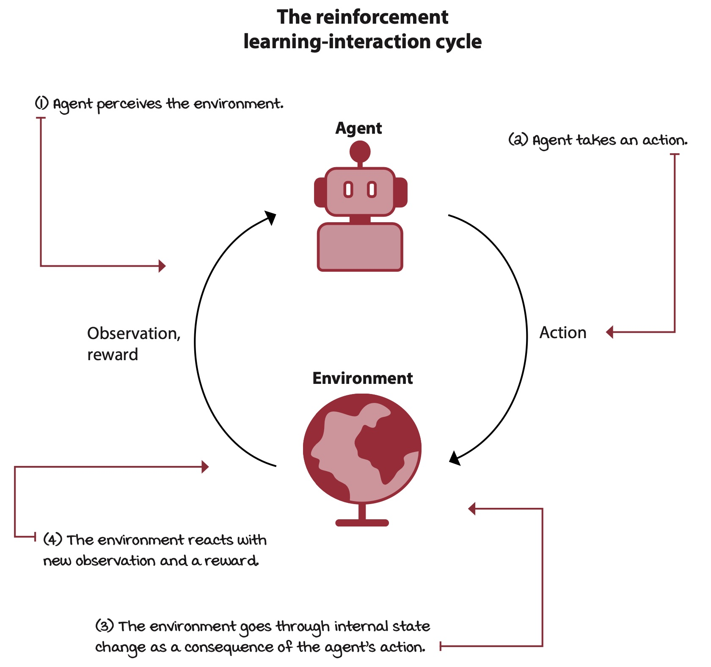
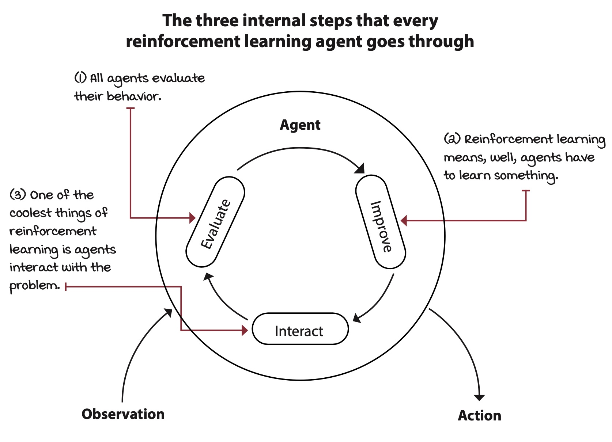
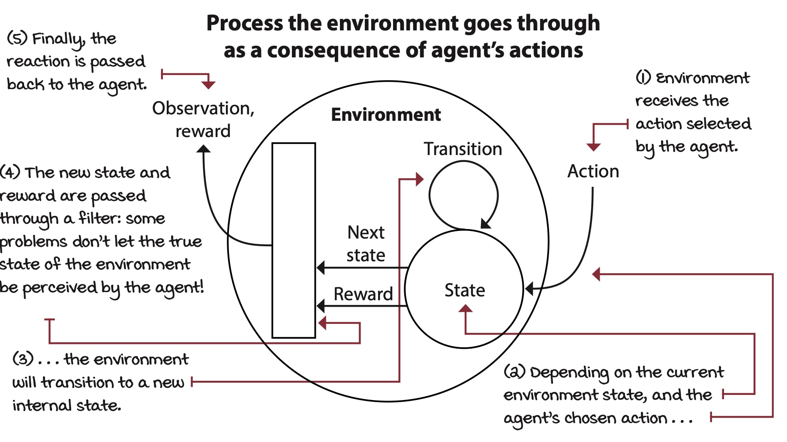
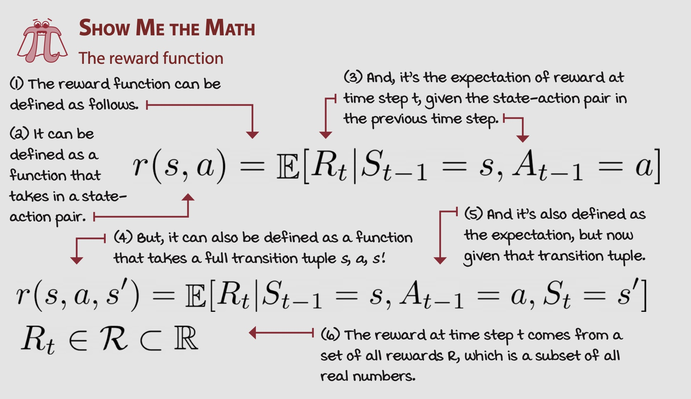
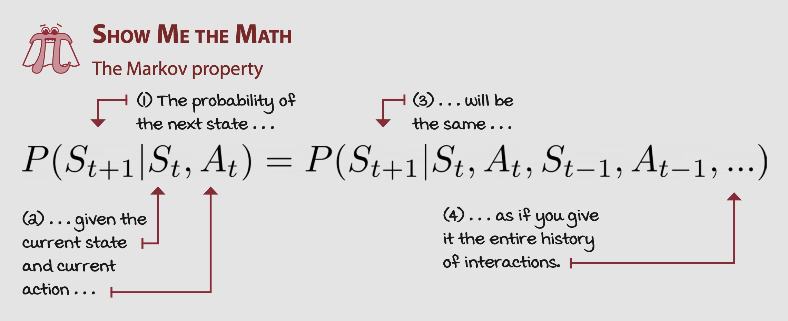
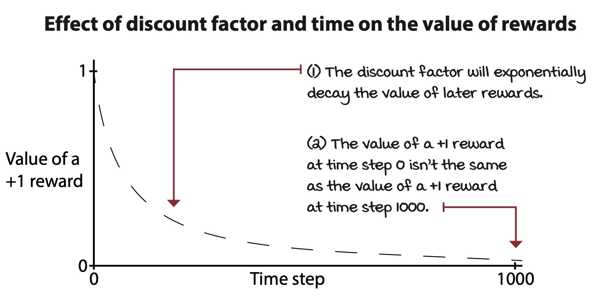

Mathmatical Foundations of Reinforcement Learning
Deep Learning
Reinforcement Learning
Deep Reinforcement Learning
My notes on Deep Reinforcement Learning (DRL) based on the second chapter of the ‘Grokking Deep Reinforcement Learning’ by Miguel Morales.
Components of Reinforcement Learning
- Reinforcement Learning: tackles the problem of complex sequential decision-making under uncertainty.
- Complex: refers to the vast state and action spaces of the environment the agent must learn.
- Sequential: refers to the delayed consequences of an agent’s actions.
- Uncertainty: refers to how we don’t know how the agent’s actions will effect the environment.

The agent: The decision maker
- Agents: is an entity that is soley responsible for makeing decisions

The environment: Everything else
- The environment includes everything external to the agent, beyond the agent’s control, and everything that follows the agent’s decisions.

- Grid World Environment:
- Bandit Environment:
Components of the Environment:
- The environment is made up of states, actions, transitions probabilities, and a reward function.
States: Specific configurations of the environment
A state is a complete description of the environment
Terminal States: Is the last state in an eposdic task. All transitions from this state goes back to itself.
State Space: A combiniation of all possible set of variables and value that can describe the environment.
Observation: Is the set of variables that the agent experiences. It may or maynot be complete as a state must be.
Observation Space: Is all possible values of the variable an agent experiences.
Actions: A mechanism to influence the environment
An action is a choice an agent can make that may or may not influence the environment.
Action Space: The set of all actions in all states.
Transition Function: Consequences of agent actions
- A transition function outputs the probability of getting to a new state given the current state and action the agent will take. So it dictates what are the chances the agent will transition to the next state.
- Stochastic Transitions: Is a transition that is not gaurenteed to go to one different state but may go to different states with a different probability.
Reward Function
- A reward function is what guides the agent to achieve it’s goal. It maps an agent’s state or action to a scalar reward that gives a single of goodness but not correctness of agent’s state or action.

Markov Decision Process (MDPs): The engine of the environment
- model virtually any complex sequential decision-making problem under uncer- tainty in a way that RL agents can interact with and learn to solve solely through experience.
Markov Property

Horizon: Time changes what’s optimal
Discount: The future is uncertain, value it less

Extensions to MDPs
Putting it all together
References
Morales, M. (2020). Grokking Deep Reinforcement Learning. Originally Published: October 15, 2020.
All figures are sourced from this book.